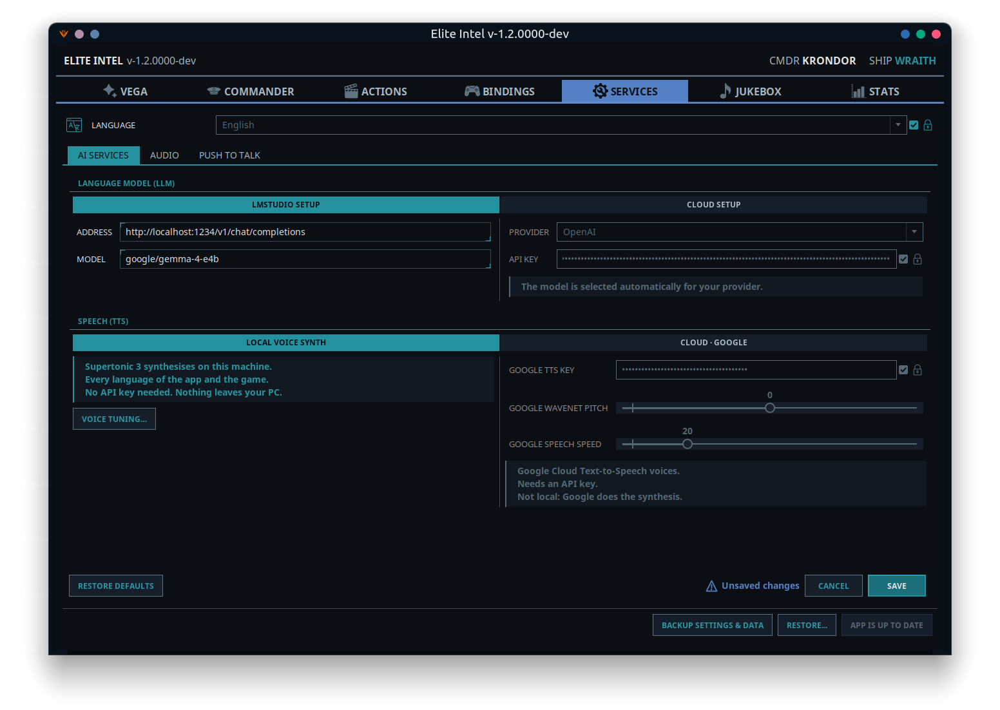
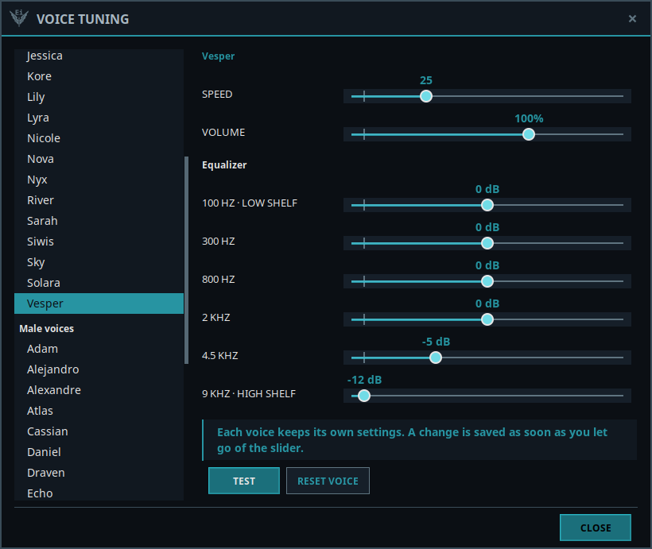
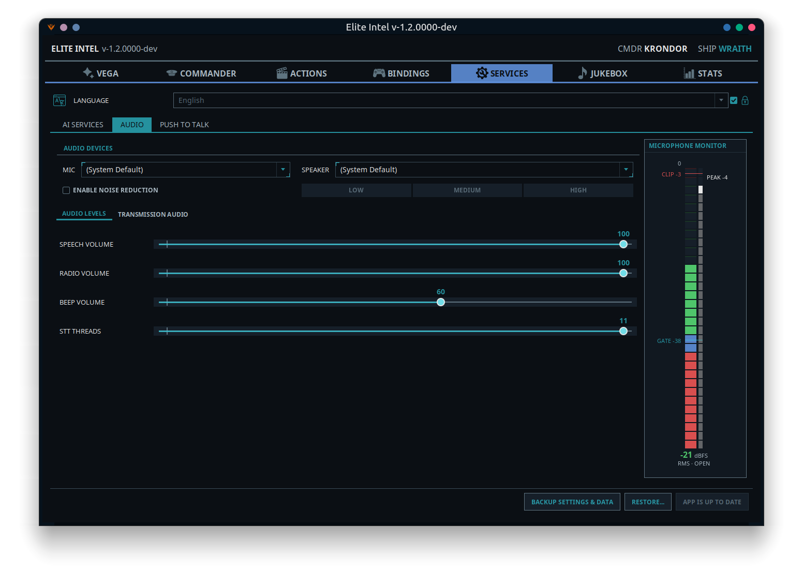
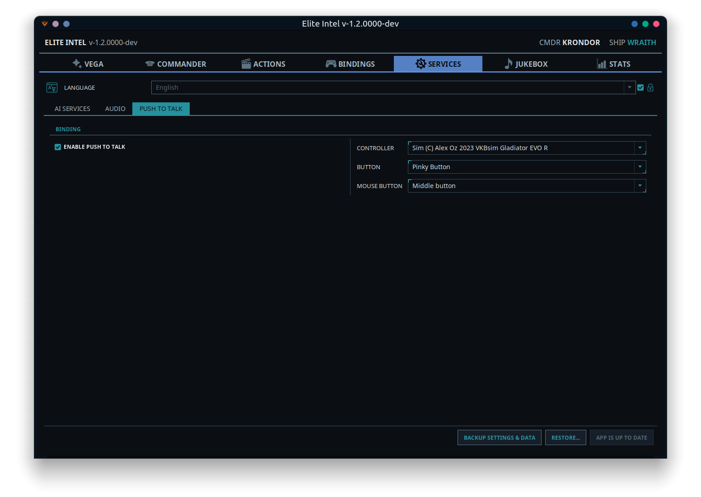

Services Tab
 The plumbing. The
Language selector applies everywhere and sits at the top, then three sub-tabs: AI Services,
Audio, and Push To Talk. The footer holds Backup Settings & Data,
Restore... and the update button — App is Up to Date or Update Available.
The plumbing. The
Language selector applies everywhere and sits at the top, then three sub-tabs: AI Services,
Audio, and Push To Talk. The footer holds Backup Settings & Data,
Restore... and the update button — App is Up to Date or Update Available.
Language
The language of both your voice commands and the app's own interface. Choosing one re-renders the whole window immediately and Vega announces the change out loud.
The selector is locked so a stray click or scroll cannot switch your language. Uncheck the lock beside it to change it, and it locks itself again afterwards.
Supported: English, Russian, Ukrainian, German, French, Spanish, Italian, Portuguese, Brazilian Portuguese.
The journal folder has moved to the Commander tab, and the bindings folder to the BindForge tab.
AI Services

Two switches — one for the language model, one for speech — and the unused side of each is dimmed so it is obvious which one is live.
This is the one tab in the app that works on a draft. Nothing is written until you press Save, and trying to leave with unsaved edits asks you to Save, Discard, or Keep editing.
Language Model (LLM)
Switch between LMStudio Setup (local) and Cloud Setup.
LMStudio Setup
| Field | Notes |
|---|---|
| Address | Defaults to LM Studio's own URL, http://localhost:1234/v1/chat/completions. Point it at another machine's IP if inference runs elsewhere on your LAN |
| Model | The model name. One model serves both commands and queries |
The supported local model is google/gemma-4-e4b. Elite Intel warns you at startup if your
local model is something else; other models may work poorly or not at all.
If your PC can hold the game and the model together, a button under these fields sets LM Studio up for you. That means one NVIDIA RTX 30-series or newer card with 24 GB (an RTX 3090 or better), or two or more such cards with about 20 GB between them, each with at least 8 GB. AMD cards with the same memory are offered the button as a beta. See Choose your LLM for the details.
| Button | What it does |
|---|---|
| Install LM Studio | Installs LM Studio, downloads and loads the model, and fills in Address and Model |
| Set up LM Studio | For an LM Studio you already have: adds the model and fills in the fields, nothing more |
| Continue setup | Picks up an install that stopped part-way |
| Uninstall LM Studio | Removes the LM Studio Elite Intel installed, with its models, after listing them |
An LM Studio installed this way starts and stops with Elite Intel's services, and is stopped when you close the app even if its setup did not finish. An LM Studio you installed yourself is never started, stopped or removed.
Guides for running LM Studio on a second PC: LM Studio on Linux · LM Studio on Windows · AMD RX series · Headless Ubuntu server
Cloud Setup
| Field | Notes |
|---|---|
| Provider | Pick one: Anthropic (Claude), OpenAI, Google (Gemini), xAI (Grok), DeepSeek |
| API Key | Your key for that provider, with a Locked checkbox beside it so a saved key cannot be edited by accident. Uncheck Locked to change it |
You do not pick a model — the right one is selected automatically for your provider.
A key belongs to one provider: picking a different provider empties the key field so you can paste that provider's key, and picking your saved provider again brings its key back, so an accidental click costs nothing. Save stays greyed out until both a provider and a key are filled in.
See Cloud LLM options for how to obtain a key from each provider.
Speech (TTS)
Switch between Local Voice Synth and Cloud · Google.
| Engine | Where it runs | Notes |
|---|---|---|
| Supertonic 3 | On your PC | The default. 45 voices, and every voice speaks every language of the app and the game. No key, and nothing leaves your PC |
| Google's servers | Google Cloud Text-to-Speech. Needs a Google TTS Key (with the same Locked checkbox). Has a Google WaveNet Pitch slider, used by the WaveNet voices, and a Google Speech Speed slider |
Radio traffic is always spoken by Supertonic 3, whichever engine you choose for Vega.
Switching engines resets every ship's voice to the new engine's default voice. Ship personalities are kept. You are asked to confirm before it happens.
Voice Tuning

The voices differ a little in loudness and pace, so Voice Tuning… lets you adjust each one on its own. The list on the left is grouped into Female voices and Male voices; select one to see its settings.
| Control | What it does |
|---|---|
| Speed | How fast this voice speaks |
| Volume | A volume trim for this voice |
| Equalizer | Six bands, for shaping the sound of this voice |
| Test | Plays a line with the current settings |
| Reset Voice | Puts this voice back to its defaults |
There is no Save button: a change is saved as soon as you let go of the slider. You can open Voice Tuning whichever engine speaks for Vega, because Supertonic 3 voices the radio either way.
Footer
Restore Defaults resets the language model to local LM Studio with the default address and model, and saves immediately. Save commits everything else; it is greyed out until something actually changes, and an Unsaved changes hint appears next to it when it does.
Saving restarts only what it has to — changing the model or key restarts the brain, changing the speech engine or its key restarts the voice.
Audio

Audio Devices
Mic and Speaker dropdowns, or (System Default). The same pickers are available from the Audio Devices button on the Vega tab. A change applies straight away — only the service that uses the device restarts.
Enable Noise Reduction with a Low / Medium / High strength. Start at Medium. High is for genuinely noisy rooms — it is aggressive, and over-filtering can cost you transcription accuracy.
Below the devices are two tabs.
Audio Levels
| Slider | What it does |
|---|---|
| Speech Volume | How loud Vega speaks |
| Radio Volume | How loud radio transmissions are. Greyed out while radio transmissions are off |
| Beep Volume | The confirmation beep — it fires when speech-to-text has finished and the language model has your input |
| STT Threads | CPU threads for transcription (4–11). A minimum request, not a reservation: the app asks for this many, uses what the processor gives it, and releases them when the work is done |
How fast Vega speaks is set per voice in Voice Tuning, or with Google Speech Speed for a Google voice. Music volume lives on the Jukebox tab, so you never turn the wrong one down.
Transmission Audio
How radio messages sound.
| Control | What it does |
|---|---|
| Radio beep at the start and end of each message | Squelch tones around each transmission, with their own volume slider |
| Radio effect | A stronger, degraded radio sound |
| Apply selected effects to radio chat and NPC messages | The tones and radio effect above apply to radio traffic. When off, radio speech keeps its standard filter |
| Apply selected effects to VEGA on foot or in an SRV | Vega sounds like she is on comms when you are away from the ship |
Microphone Monitor
A live meter down the right side. Read it like this:
- FLOOR — your noise level when you are not speaking.
- GATE — the threshold. Audio above the gate is captured for transcription; when it drops below, what was captured is transcribed and sent to the language model.
- CLIP — you are overdriving the microphone. Anything up there transcribes badly.
The status reads OPEN, MARGINAL, CLOSED or HOT (clipping). Under the meter, a plain-language hint appears when something is wrong: Microphone not calibrated, or Microphone too quiet for the room — raise the input level in your operating system's sound settings, then recalibrate. When the microphone is healthy, no hint is shown.
If the meter does not show a clear gap between FLOOR and your speaking level, run CALIBRATE AUDIO on the Vega tab — it sets the gate for you, and warns you if the gap is too small to work with.
Push To Talk

With push-to-talk on, the microphone is closed until you hold a button. Anything it picks up without the button held is thrown away as room noise.
| Control | Notes |
|---|---|
| Enable Push to Talk | The master switch |
| Controller | Any connected game controller or HOTAS. Your saved controller is re-selected automatically when it reconnects |
| Button | Which button on it, shown with the label you gave it in the Alias Designer |
| Mouse button | A second trigger: Middle button, Button 4 (back) or Button 5 (forward). Handy on foot or in the SRV, when your HOTAS is out of reach. Left and right are not offered — they fire your weapons |
Hold the button, speak, release. Pressing it also cuts Vega off mid-sentence, so you never have to wait for her to finish.
While push-to-talk is on, the SLEEP / WAKE UP button on the Vega tab is disabled — the button is the gate. A change here takes effect on the very next press, and the button works whether or not you ever open this tab.
Backup Settings & Data
Moving to a new computer, or just being careful. Backup Settings & Data writes one .zip holding
your settings, databases, custom commands and BindForge's backups.
API keys need a password. Choose one and press Lock Keys and Save to lock your keys into the backup. You will need the password to restore them. Choose Without API Keys and the backup holds none, so you enter them again after restoring.
Restore... puts a backup back. What it replaces is kept in a safety folder inside the app data folder, and Elite Intel restarts to finish. A backup made by a newer version needs the app updated first. Folders that do not exist on the new computer are reset, so check the journal folder on the Commander tab and the bindings folder on the BindForge tab afterwards.
This backs up Elite Intel. To back up your game control files, use Player Backups on the BindForge tab.
Where the settings live
All settings and data are stored on your PC:
- Linux:
~/.local/share/elite-intel/(or$XDG_DATA_HOME/elite-intel/) - Windows:
%LOCALAPPDATA%\elite-intel\
The database is in db, custom commands in custom-commands (with its own backups), and your
control file backups in playerbackups, unless you chose another folder for them.
Community 👉Matrix👈